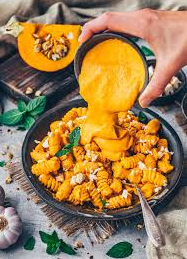

Pumpkin pasta

Homemade pizza recipe
The following is a recipe I've used to make pasta with a pumpkin based sauce. It's a pretty simple
recipe, however it does a take approximately 45 minutes to an hour. So best to have a good podcast ready to listen to.
Ingredients
- 1/2 butternut pumpkin
- 1 onion
- 3 cloves of garlic
- 0.5kg of chicken breast, or some other meat or meat alternative
- 200g washed baby spinach
- 1 large red capsicum, chopped
- 200g of mushrooms, sliced
- Olive oil
- Mixed italian herbs
- Sweetened paprika
- Cinnamon powder
Steps
- Turn the oven on to 200 degrees celcius.
- Chop the pumpkin into cubes, approximately 2-3cm in lengths.
- Place in large bowl and cover in mixed italian hersbs, sweetened paprika, Cinnamon powder, and olive oil. Mix all the ingredients together. Feel free to be quite liberal in the serving of herbs and spices.
- Place the contents of the bowl into an overproof dish and into the over.
- Chop the onion and cook in olive oil in a skillet on low heat until onion appears glassy.
- Crush the garlic cloves and add to the onion. Feel free to add some more spices at this step, I can recommend paprika, italian mixed herbs, cajun spices, moroccan seasoning etc...
- Cut the chicken breast into cubes of approx. 2-3cm length.
- Add the chicken to the onion/garlic mixture and cook for 5 minutes on high temperature.
- Add the mushrooms and the capsicum.
- Once the pumpkin is cooked through take it out of the oven and add it to the chicken. This can take some timing, as you don't want to cook the chicken for too long before adding
the pumpking. Otherwise you may end up with dried out chicken pieces.
- Prepare the pasta by placing it into a large saucepan of boiling water. Add some salt to the water before putting the pasta in, but not too much.
- Depending on the pumpkin it will either quickly dissolve and form more of a sauce, or it may stay in the cube shapes. If you have the later case, make sure you cook the chicken/pumpkin
long enough so that the pumpkin is soft inside.
- Add the baby spinach, just long enough to allow it to wilt.
- Take the skillet of the heat and serve with the pasta once it is compelte.
Home